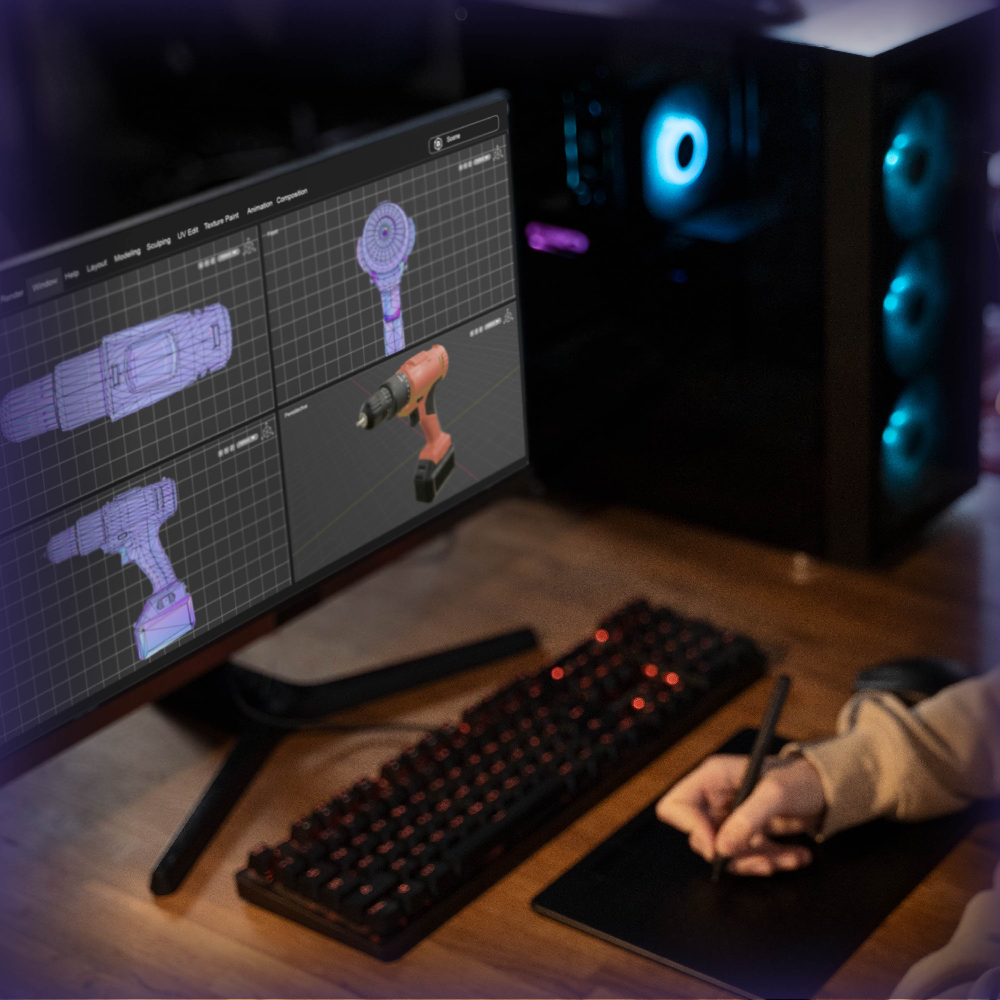

Home / La ingenieria multimedia
⋄⋄⋄◇◆ La ingenieria multimedia ◆◇⋄⋄⋄
⋄⋄⋄◇◆El ingeniero multimedia en formación - Perfil del Estudiante◆◇⋄⋄⋄
El aspirante que desee ingresar al programa de Ingeniería Multimedia de la Universidad Nacional Abierta y a Distancia - UNAD debe ser una persona proactiva, emprendedora, con pensamiento crítico y creativo, con actitud de servicio y disposición al aprendizaje permanente y autónomo. Debe tener un dominio básico en el área de sistemas o informática, facilidad de adaptación a la metodología de formación virtual, capacidad para trabajar en equipo y buen manejo de relaciones interpersonales. Adicionalmente debe contar con un alto grado de compromiso y responsabilidad con su proceso de formación, ingenio para desempeñarse en diferentes áreas y un especial interés por la investigación y las tecnologías digitales.
⋄⋄⋄◇◆El ingeniero multimedia en formación - Perfil del Estudiante◆◇⋄⋄⋄
Animación
El Ingeniero Multimedia de la UNAD está en la capacidad de desempeñarse laboralmente en diversos campos de las industrias creativas y tecnológicas. Este profesional puede asumir roles de liderazgo en la creación de contenidos digitales, aplicaciones y productos multimedia. A continuación, se presentan algunas de las áreas de desempeño de un Ingeniero Multimedia:
Animador y Modelador Digital: Crea bocetos, guiones, modelos gráficos 2D/3D y escenarios digitales para diversas plataformas.
Desarrollo de aplicaciones multimedia
El Ingeniero Multimedia de la UNAD está en la capacidad de desempeñarse laboralmente en diversos campos de las industrias creativas y tecnológicas. Este profesional puede asumir roles de liderazgo en la creación de contenidos digitales, aplicaciones y productos multimedia. A continuación, se presentan algunas de las áreas de desempeño de un Ingeniero Multimedia:
Desarrollador de Aplicaciones Multimedia y Web: Diseña y gestiona el back-end y front-end de sitios y aplicaciones web. Diseñador de Experiencia de Usuario (UI/UX): Diseña interfaces y experiencias interactivas centradas en el usuario.
Marketing multimedia
El Ingeniero Multimedia de la UNAD está en la capacidad de desempeñarse laboralmente en diversos campos de las industrias creativas y tecnológicas. Este profesional puede asumir roles de liderazgo en la creación de contenidos digitales, aplicaciones y productos multimedia. A continuación, se presentan algunas de las áreas de desempeño de un Ingeniero Multimedia:
Diseñador de Contenidos Digitales: Crea piezas gráficas y productos audiovisuales para estrategias de comunicación y marketing digital.

Videojuegos
El Ingeniero Multimedia de la UNAD está en la capacidad de desempeñarse laboralmente en diversos campos de las industrias creativas y tecnológicas. Este profesional puede asumir roles de liderazgo en la creación de contenidos digitales, aplicaciones y productos multimedia. A continuación, se presentan algunas de las áreas de desempeño de un Ingeniero Multimedia:
Desarrollador de Videojuegos y Realidades Extendidas: Programa, integra y optimiza código para videojuegos y aplicaciones de realidad virtual y aumentada utilizando motores de desarrollo en tiempo real.
Gestion de Proyectos
El Ingeniero Multimedia de la UNAD está en la capacidad de desempeñarse laboralmente en diversos campos de las industrias creativas y tecnológicas. Este profesional puede asumir roles de liderazgo en la creación de contenidos digitales, aplicaciones y productos multimedia. A continuación, se presentan algunas de las áreas de desempeño de un Ingeniero Multimedia:
Gestor de Proyectos Multimedia: Planea, ejecuta y gestiona el desarrollo de proyectos digitales multimedia respondiendo a necesidades del sector productivo.

Contacto
⋄⋄⋄◇◆ ◆◇⋄⋄⋄


© 2026 MichArt